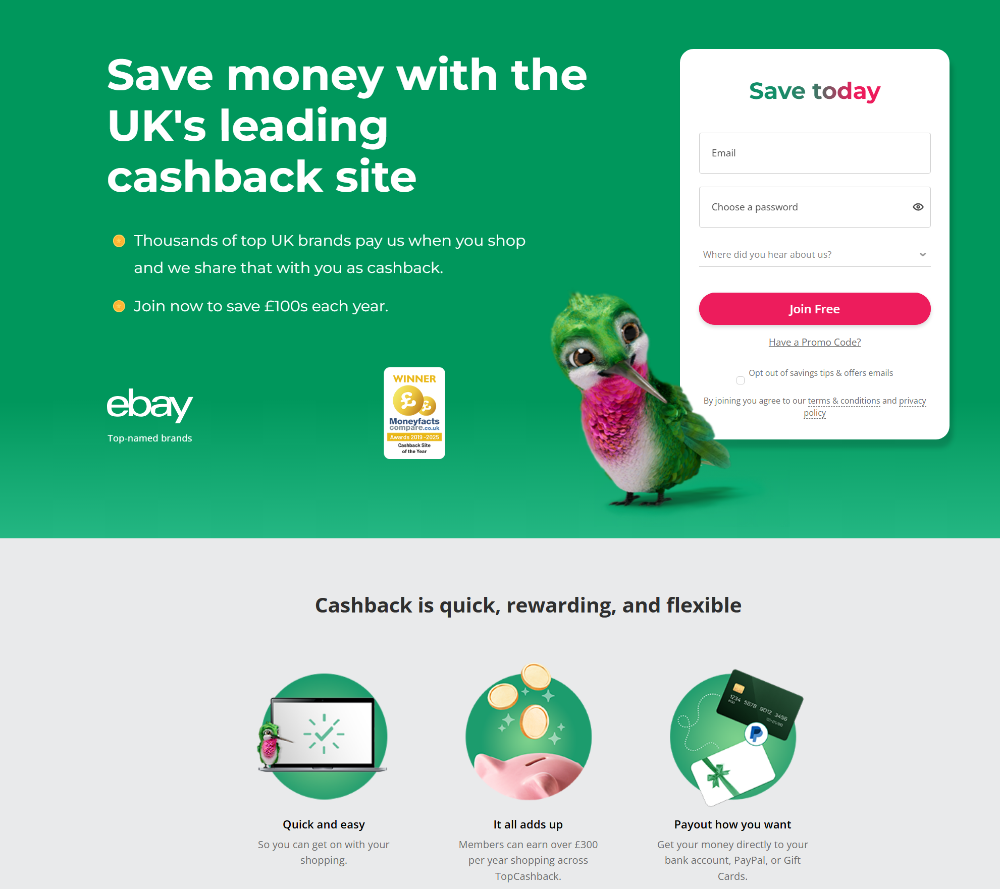
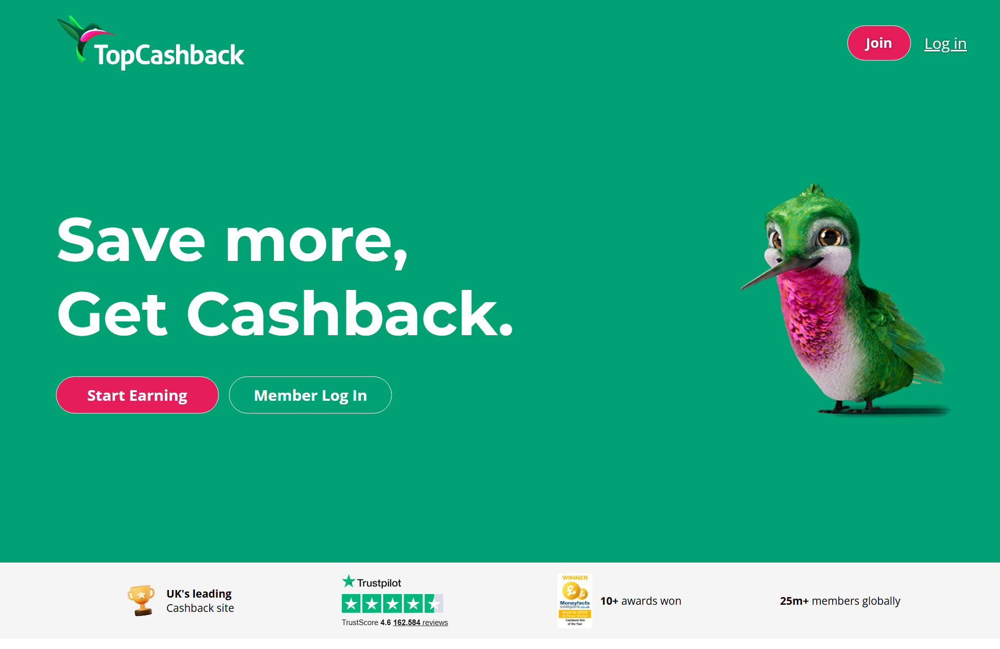
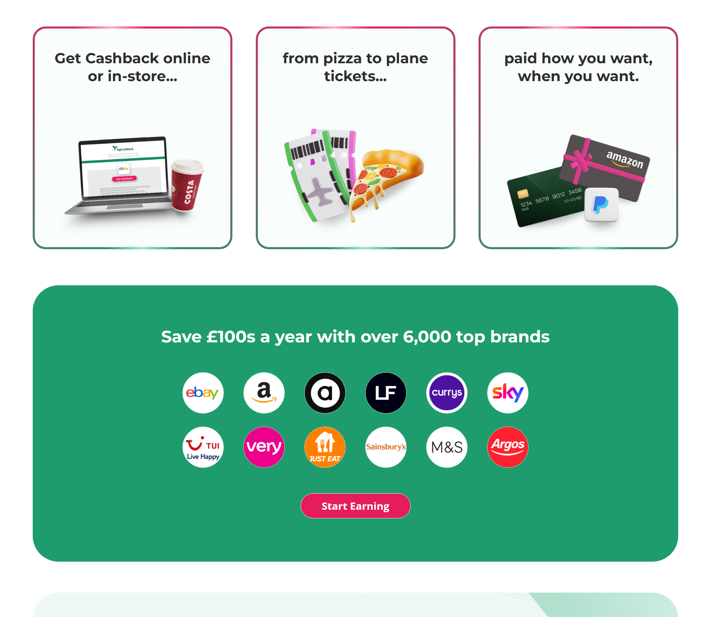
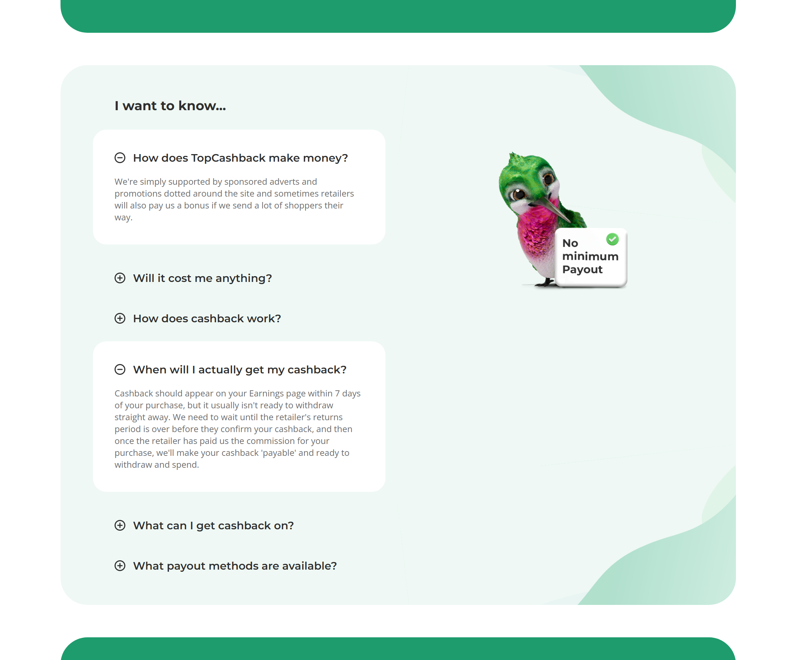

A total redesign of TopCashback's Logged-Out Homepage, maximising visual appeal, usability and accessibility.
Note: I did not design this page besides providing Front End Dev and Accessibility guidance to help shape the design. Credit goes to the TopCashback Design/UX team for their work on the UI design.


